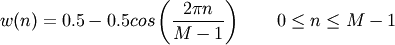

numpy.hanning¶
- numpy.hanning(M)¶
Return the Hanning window.
The Hanning window is a taper formed by using a weighted cosine.
Parameters : M : int
Number of points in the output window. If zero or less, an empty array is returned.
Returns : out : ndarray, shape(M,)
The window, with the maximum value normalized to one (the value one appears only if M is odd).
Notes
The Hanning window is defined as

The Hanning was named for Julius van Hann, an Austrian meterologist. It is also known as the Cosine Bell. Some authors prefer that it be called a Hann window, to help avoid confusion with the very similar Hamming window.
Most references to the Hanning window come from the signal processing literature, where it is used as one of many windowing functions for smoothing values. It is also known as an apodization (which means “removing the foot”, i.e. smoothing discontinuities at the beginning and end of the sampled signal) or tapering function.
References
[R24] Blackman, R.B. and Tukey, J.W., (1958) The measurement of power spectra, Dover Publications, New York. [R25] E.R. Kanasewich, “Time Sequence Analysis in Geophysics”, The University of Alberta Press, 1975, pp. 106-108. [R26] Wikipedia, “Window function”, http://en.wikipedia.org/wiki/Window_function [R27] W.H. Press, B.P. Flannery, S.A. Teukolsky, and W.T. Vetterling, “Numerical Recipes”, Cambridge University Press, 1986, page 425. Examples
>>> np.hanning(12) array([ 0. , 0.07937323, 0.29229249, 0.57115742, 0.82743037, 0.97974649, 0.97974649, 0.82743037, 0.57115742, 0.29229249, 0.07937323, 0. ])
Plot the window and its frequency response:
>>> from numpy.fft import fft, fftshift >>> window = np.hanning(51) >>> plt.plot(window) [<matplotlib.lines.Line2D object at 0x...>] >>> plt.title("Hann window") <matplotlib.text.Text object at 0x...> >>> plt.ylabel("Amplitude") <matplotlib.text.Text object at 0x...> >>> plt.xlabel("Sample") <matplotlib.text.Text object at 0x...> >>> plt.show()
>>> plt.figure() <matplotlib.figure.Figure object at 0x...> >>> A = fft(window, 2048) / 25.5 >>> mag = np.abs(fftshift(A)) >>> freq = np.linspace(-0.5, 0.5, len(A)) >>> response = 20 * np.log10(mag) >>> response = np.clip(response, -100, 100) >>> plt.plot(freq, response) [<matplotlib.lines.Line2D object at 0x...>] >>> plt.title("Frequency response of the Hann window") <matplotlib.text.Text object at 0x...> >>> plt.ylabel("Magnitude [dB]") <matplotlib.text.Text object at 0x...> >>> plt.xlabel("Normalized frequency [cycles per sample]") <matplotlib.text.Text object at 0x...> >>> plt.axis('tight') (-0.5, 0.5, -100.0, ...) >>> plt.show()